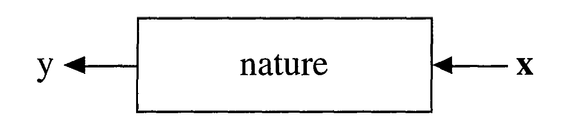
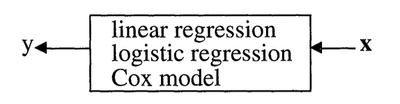
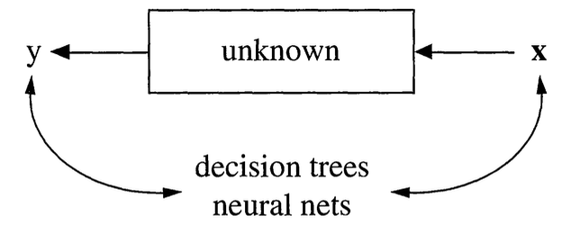
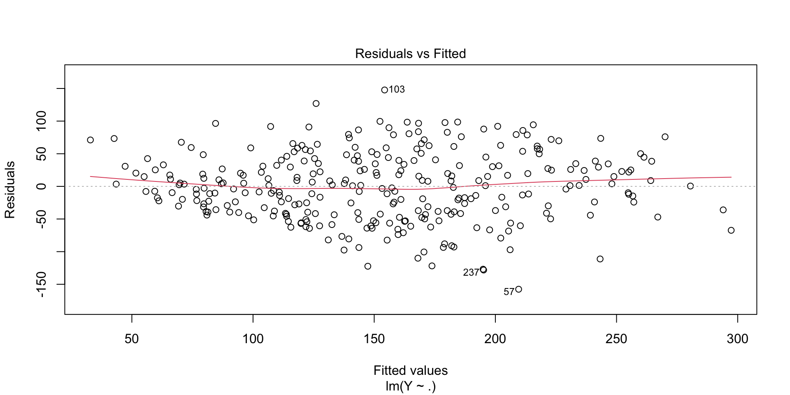
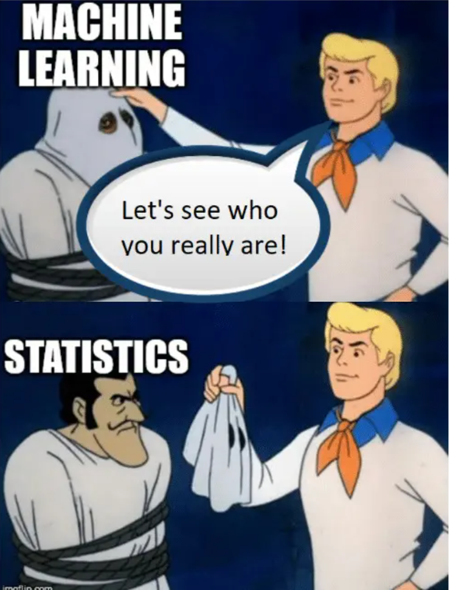
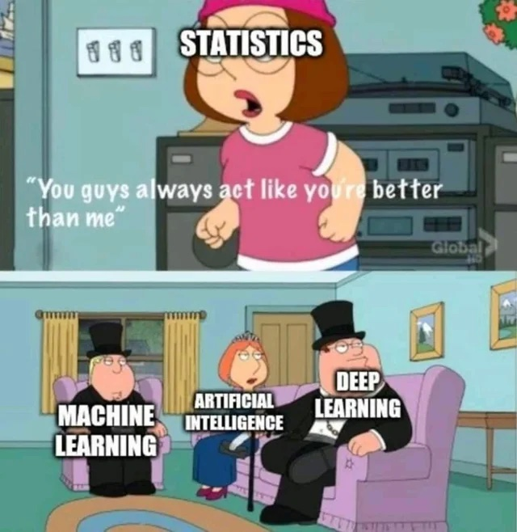

Statistics vs Machine Learning: the Two Cultures
Advanced Statistics and Data Analysis
The Two Cultures of Statistical Modeling
Introduction
This lecture is based on the influential paper by Leo Breiman, “Statistical Modeling: The Two Cultures”, published in Statistical Science in 2001.
This is a very good read and I highly recommend it to everyone interested in statistics and machine learning.
Introduction
In statistics, we think as the data as being generated by “nature” with an unkown mechanism, which we can think of as a “black box”.

Introduction
There are two main goals in statistical modeling:
Prediction: to predict what the response variable will be for new observations.
Information: to extract some information about how nature is using the input variables to generate the response.
Two Cultures
There are two different approaches to achieve these goals:
The data modeling culture: the “statistics approach”.
The algorithmic modeling culture: the “machine learning approach”.
The Data Modeling Culture
We start by assuming a stochastic model for the data generating process, i.e., for the inside of the black box.
For instance, we assume that data are generated as independent draws of \[ y = f(X, \theta, \text{noise}), \]
where \(f\) is a known function, \(\theta\) are unknown parameters, and the the parameters are estimated from the data (and the model).
The Data Modeling Culture
For instance, with the linear model we assume \[ y = X \beta + \varepsilon. \]

Statistics
The Algorithmic Modeling Culture
In this approach, we consider the black box unknown and too complex to be described by a simple stochastic model.
Instead, we look for a function \(f(x)\), seen only as an algorithm to predict the response from the input variables, without any assumption on the data generating process.
The Algorithmic Modeling Culture

Machine Learning
Prediction vs. Explanation
Typically, in the data modeling culture, we evaluate the model by looking at the goodness of fit.
We focus on parameter estimates, and we care deeply about interpreting the values of the parameters and explaining the model in the context of the application.
Prediction vs. Explanation
On the other hand, in the algorithmic modeling culture, we evaluate the model by looking at how well it can predict new, unseen observations.
We do not care much about the interpretation of the parameters of the model, but just about how well it works in predicting the response.
Note that the same model can be seen through the lense of data modeling or algorithmic modeling.
Example: Linear Regression
Linear Regression
Call:
lm(formula = Y ~ ., data = train)
Residuals:
Min 1Q Median 3Q Max
-157.600 -39.396 1.144 38.463 147.705
Coefficients:
Estimate Std. Error t value Pr(>|t|)
(Intercept) -381.3352 81.5884 -4.674 4.54e-06 ***
AGE -0.1383 0.2561 -0.540 0.589610
SEX -25.9274 6.8286 -3.797 0.000179 ***
BMI 5.3164 0.8732 6.089 3.62e-09 ***
BP 1.2348 0.2668 4.629 5.56e-06 ***
S1 -1.2916 0.6712 -1.924 0.055297 .
S2 0.8808 0.6181 1.425 0.155204
S3 0.9001 0.9239 0.974 0.330734
S4 11.8392 7.1749 1.650 0.100012
S5 73.7643 18.5333 3.980 8.72e-05 ***
S6 0.3345 0.3226 1.037 0.300706
---
Signif. codes: 0 '***' 0.001 '**' 0.01 '*' 0.05 '.' 0.1 ' ' 1
Residual standard error: 53.14 on 289 degrees of freedom
Multiple R-squared: 0.5287, Adjusted R-squared: 0.5124
F-statistic: 32.43 on 10 and 289 DF, p-value: < 2.2e-16Linear Regression

Evaluating model performance
The most obvious way to see how well the model emulates nature is how close the values predicted by the model are to the observed response.
At first, one might think that the closest the model fits to the data, the better.
But if the model has too many parameters it may overfit the data and lead to poor performance on new data.
Measuring the performance on data unseen by the model is an effective way to protect against this effect.
Linear Regression: evaluation
Principles
The multiplicity of good models
Especially in high-dimensional settings, the data could point to several possible models and it is difficult to say which one most accurately reflects the data.
Breiman calls this the Rashomon effect, in which different models lead to almost identical performance, but to very different interpretations.
This may be an effect of instability, in which two models are close in terms of error but very distant in terms of its form.
Example: variable selection in regression
Call:
lm(formula = Y ~ SEX + BMI + BP + S1 + S4 + S5, data = train)
Residuals:
Min 1Q Median 3Q Max
-155.119 -39.343 -2.248 38.082 153.276
Coefficients:
Estimate Std. Error t value Pr(>|t|)
(Intercept) -284.5238 33.3177 -8.540 7.44e-16 ***
SEX -25.3662 6.7529 -3.756 0.000208 ***
BMI 5.5306 0.8398 6.586 2.09e-10 ***
BP 1.2315 0.2556 4.818 2.33e-06 ***
S1 -0.3946 0.1135 -3.476 0.000586 ***
S4 11.9547 3.4683 3.447 0.000650 ***
S5 51.6376 8.0329 6.428 5.23e-10 ***
---
Signif. codes: 0 '***' 0.001 '**' 0.01 '*' 0.05 '.' 0.1 ' ' 1
Residual standard error: 53.07 on 293 degrees of freedom
Multiple R-squared: 0.5234, Adjusted R-squared: 0.5137
F-statistic: 53.64 on 6 and 293 DF, p-value: < 2.2e-16Example: variable selection in regression
library(leaps)
models <- regsubsets(Y~., data = train, method = "seqrep", nvmax = 5)
model2 <- lm(Y~SEX+BMI+BP+S3+S5, data=train)
summary(model2)
Call:
lm(formula = Y ~ SEX + BMI + BP + S3 + S5, data = train)
Residuals:
Min 1Q Median 3Q Max
-153.226 -38.402 -1.375 37.136 145.849
Coefficients:
Estimate Std. Error t value Pr(>|t|)
(Intercept) -226.9289 42.1929 -5.378 1.54e-07 ***
SEX -25.0609 6.7479 -3.714 0.000244 ***
BMI 5.2666 0.8533 6.172 2.23e-09 ***
BP 1.1534 0.2544 4.533 8.46e-06 ***
S3 -1.0357 0.2811 -3.685 0.000272 ***
S5 47.7493 6.8917 6.928 2.69e-11 ***
---
Signif. codes: 0 '***' 0.001 '**' 0.01 '*' 0.05 '.' 0.1 ' ' 1
Residual standard error: 53.31 on 294 degrees of freedom
Multiple R-squared: 0.5175, Adjusted R-squared: 0.5093
F-statistic: 63.06 on 5 and 294 DF, p-value: < 2.2e-16Example: variable selection in regression
Simplicity vs. accuracy
Occam’s Razor is a principle that is often invoked in science and that usually is intended to mean “the simpler the better”.
Unfortunately, in prediction, accuracy and simplicity (interpretability) are in conflict.
For instance, linear regression is a fairly interpretable model, but its accuracy is usually less than that of a neural network or a random forest.
Simplicity vs. accuracy
This is a trade-off that needs to be taken into account.
The relative importance of simplicity and accuracy depends on the analytical goals and on the application.
Information from a black box
Very often, deep neural networks and complex random forests are seen as black boxes, but some information is available for these models too.
For instance, variable importance, in which by perturbing the values of a variable we can measure its importance on the prediction performance.
Conclusions
Statistics vs. Machine Learning?
Leo Breiman was very vocal on its support for machine learning as opposed to data modeling approaches.
However, things are not as clear cut, and a synthesis of these approaches is needed for modern data analysis.
New technologies like LLMs and Foundation Models, require data scientists to think harder about these questions in the context of complex data and models.
The best of two worlds
Modern data science approaches borrow concepts from apparently very distant approaches, like black-box deep learning and Bayesian probabilistic modeling.
See for instance, Variational Autoencoders, that couple neural network architectures with Bayesian modeling.
Conclusions
Breiman in 2001 framed the discussion as the war between two cultures:
- Statistical modeling tries to understand the world
- Algorithmic modeling tries to predict the world
Conclusions
In the world of AI the two cultures are converging into one but core tensions remain:
- Predictions vs Explanation
- Correlation vs Causation
- Performance vs Interpretability
Conclusions

Just another name?
Conclusions
Modern AI has taught us that prediction can work without understanding:
- The model doesn’t understand the world!
- We don’t understand the model!
Conclusions

The lesser sister?
Conclusions
However, statistical thinking is important now more than ever in order to:
- Estimate the uncertainty of the outputs
- Evaluate how well the models work
- Infer causal relations from associations
- Understand how robust the results are to data perturbation
Conclusions

https://xkcd.com/1838/